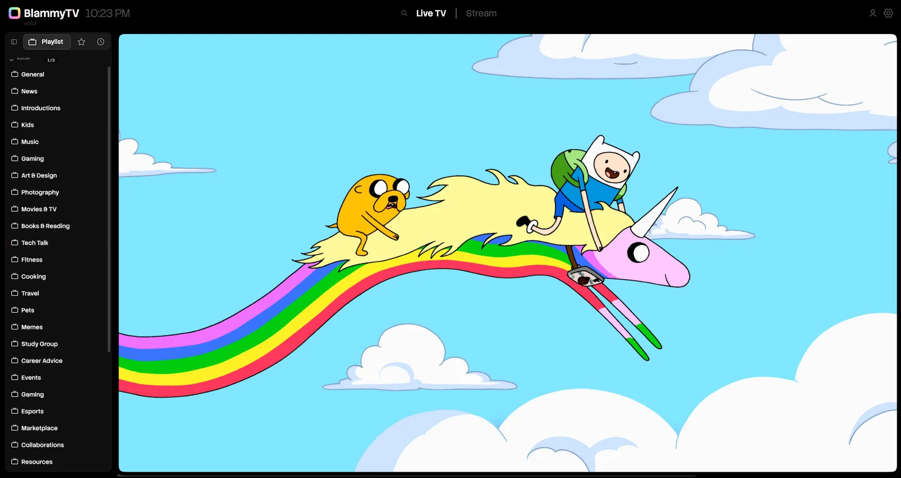

BlammyTV
All Your TV in One Place
Watch live TV, movies, shows and sports in one free app for Windows. Add your own playlists, AIOStreams or Jellyfin server.
Download for Windows Scroll to Turn On the TV-


Live TV with a Real Guide
Every channel you add lands in one guide. See what's on now and next, scroll a whole day ahead, and star the channels you watch most.
-

Movies and Shows
Sign in to AIOStreams or your own Jellyfin server, and your movies and shows fill the home page. Continue Watching keeps your place.
-

A Real Player, Built In
Everything plays in mpv, built right in. Surround sound works, and Skip Intro jumps past the opening.
-

Find Something to Watch
Browse your catalogs by genre, or see what's popular right now.
-
Accent
Red Yellow Green Blue Purple Pink Grey CustomAppearance
DarkLightMatch WindowsYour Colors
Pick an accent color, or grab any color with the eyedropper. Use it in dark or light mode, or follow Windows.